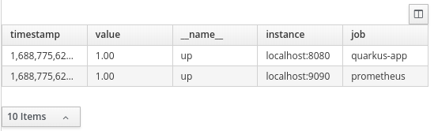
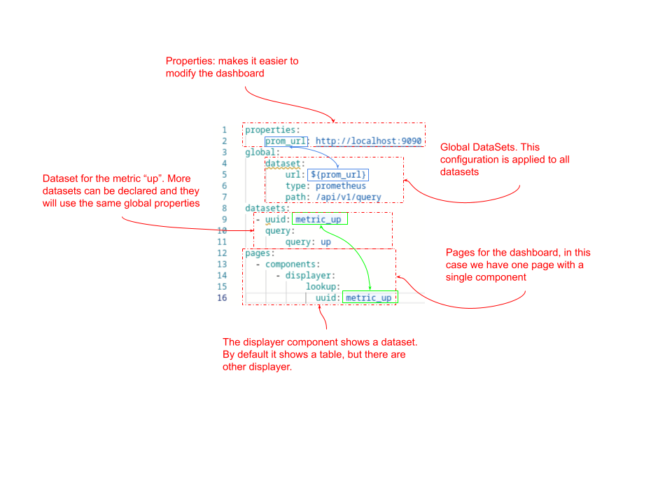
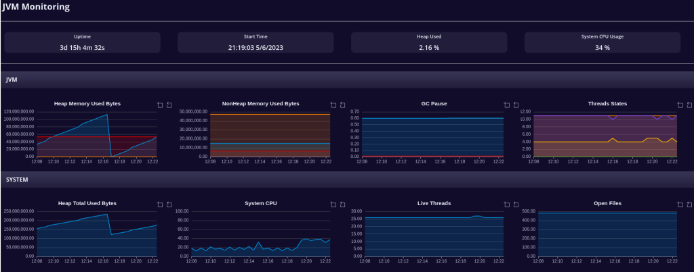
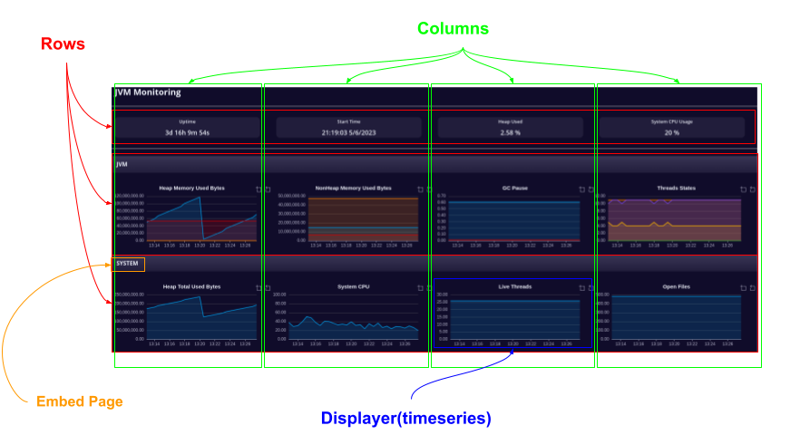
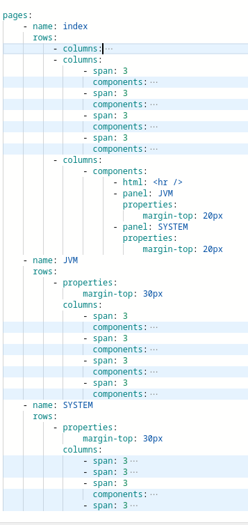
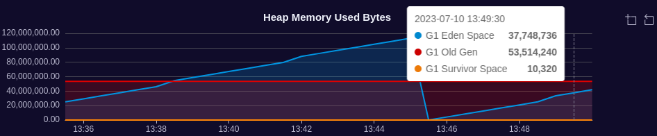

Client-side Prometheus Dashboards with Dashbuilder
Dashbuilder is a tool for creating dashboards. It runs entirely on client, hence no installation is required, users can use the online editor to create dashboards.
We already talked about Dashbuilder and Prometheus. At that time we had to manually parse the Prometheus response. In Dashbuilder 0.30.0 we made huge advancements for Prometheus which I will share in this post.
Why Using Dashbuilder?
Here are the reasons why you should consider Dashbuilder as an alternative to monitor Prometheus metrics:
- Lightweight: The final dashboard version usually takes less then 100mb of memory;
- Zero costs: It runs entirely on client-side, which means that no backend installation is required
- Embeddable: Dashbuilder can be embed in other applications. Just download the bundle from the NPM package and put Dashbuilder in an iframe in your application and the dashboard can be configured using query parameter
- Tooling: The online editor is available for free and no login is required, just access it and start editing. There’s also a VSCode Extension.
- Open Source: Dashbuilder is part of Kie Tools, which is open source and uses Apache License 2.0
How to use Dashbuilder with Prometheus
The key is in the dataset. A dataset is where Dashbuilder gets the source of data for its displayers (blocks of a dashboard) and internally we have a special dataset type for Prometheus response queries. Once we have datasets we can then display the content in blocks called displayer.
A basic dashboard definition is as follows:
datasets:
- uuid: up
url: http://localhost:9090/api/v1/query?query=up
type: prometheus
pages:
- components:
- settings:
lookup:
uuid: upIt renders the query up in a table

For a real world dashboard we almost never have a single dataset – we observe different metrics and put all together in a dashboard to monitor different metrics, so let’s create a global dataset and separate the parts of the URL in dataset properties:
properties:
prom_url: http://localhost:9090
global:
dataset:
url: ${prom_url}
type: prometheus
path: /api/v1/query
datasets:
- uuid: metric_up
query:
query: up
pages:
- components:
- displayer:
lookup:
uuid: metric_upSee the explanation for each part of the code:

Now that we know the basic about dashboards, let’s explore a more complex to monitor JVM using Micrometer metrics.
JVM Micrometer Prometheus Dashboard

Edit and view this dashboard in our online editor
Properties
This dashboard can be configured to any Prometheus installation that has Micrometer metrics. Users can setup a global filter for all metrics and the refresh time for all displayers.
properties:
### User properties (you can modify this)
prometheus_url: http://localhost:9090
job: "quarkus-app"
refresh_seconds: 30
period: 15m
window: 30s
# style
subTitleStyle: "padding: 5px; background-color: #F1F1F1; font-size: medium; font-weight: bolder; margin: 5px"
titleStyle: "font-size: x-large; margin: 10px; font-weight: bold"
### Internal Properties
time_window: "[${period}:${window}]"
global_filter: 'job="${job}"'Global Settings
Following the properties we declare the global settings which includes the datasets, displayers and the mode (dark) and we set the flag allowUrlProperties, so the properties can be modified using query parameters.
All the datasets will share the same URL, type, path. For the displayers we have a common template for the cards (see property html/html), the refresh interval and a shared chart configuration.
global:
mode: dark
dataset:
url: ${prometheus_url}
type: prometheus
path: /api/v1/query
cacheEnabled: true
refreshTime: "1second"
displayer:
refresh:
interval: ${refresh_seconds}
extraConfiguration: >-
{
"xAxis": {
"splitNumber": 3
},
"title": {
"textStyle" : {
"fontSize" : 15
}
}
}
chart:
resizable: true
height: 180
zoom: true
grid:
x: false
margin:
bottom: 20
top: 35
legend:
show: false
html:
html: >-
<div id="${this}" class="card-pf card-pf-aggregate-status" style="background-color: ${bgColor}; width: 90%; height: 58px;margin: 10px; border-radius: 10px;">
<p style="font-weight: 600; font-size: small" id="${this}Title"><em id="${this}Icon" class=""></em> ${title}</p>
<h2 style="margin: 5px; font-weight: 600; font-size: large" id="${this}Value">${value} <span id="${this}Suffix" class=""></span></h2>
</div>The datasets declaration contains only the ID and the query, all the other properties are inherited from the global dataset configuration. Notice that the query must include the properties global_filter and time_window (for timeseries).
datasets:
## cards Datasets
- uuid: uptime
query:
query: process_uptime_seconds{${global_filter}}
- uuid: start_time
query:
query: process_start_time_seconds{${global_filter}}
- uuid: heap_used
query:
query: sum(jvm_memory_used_bytes{${global_filter},area="heap"})*100/sum(jvm_memory_max_bytes{${global_filter},area="heap"})
- uuid: system_cpu_usage
query:
query: system_cpu_usage{${global_filter}}
## TIMESERIES datasets
# Memory
- uuid: heap_used_bytes
query:
query: jvm_memory_used_bytes{${global_filter}, area="heap"}${time_window}
- uuid: nonheap_used_bytes
query:
query: jvm_memory_used_bytes{${global_filter}, area="nonheap"}${time_window}
- uuid: used_bytes_total
query:
query: sum by (instance) (jvm_memory_used_bytes{${global_filter}})${time_window}
# Threads
- uuid: threads_states
query:
query: jvm_threads_states_threads{${global_filter}}${time_window}
- uuid: live_threads
query:
query: jvm_threads_live_threads{${global_filter}}${time_window}
- uuid: daemon_threads
query:
query: jvm_threads_daemon_threads{${global_filter}}${time_window}
# GC
- uuid: gc_pause_sum
query:
query: jvm_gc_pause_seconds_sum{${global_filter}}${time_window}
# System
- uuid: open_files
query:
query: process_files_open_files{${global_filter}}${time_window}
- uuid: system_cpu
query:
query: system_cpu_usage{${global_filter}}${time_window}Pages
For this dashboard we have a grid of 3×4. The titles you see in the image are actually an embed page on a collapsible panel.


Displayers
To actually show the data we use Displayers. In this page we have two displayers: METRIC (cards) and TIMESERIES.
Metrics
A metric displayer can display a single value using an HTML template (see global displayer). It is also possible to use Javascript to give some action to the card or we can apply Javascript to modify the card value using column settings. See for example the card Start Time, it uses the value from dataset start_time.
- displayer:
type: METRIC
general:
title: Start Time
columns:
- id: value
expression: >-
const d = new Date(value * 1000);
const year = d.getFullYear();
const day = d.getDay();
const month = d.getMonth();
const hour = d.getHours();
const minute = ${d.getMinutes()}.padStart(2, 0);
const second = ${d.getSeconds()}.padStart(2, 0);
${hour}:${minute}:${second} ${day}/${month}/${year}
lookup:
uuid: start_time
group:
- functions:
- source: valueTimeseries
For timeseries displayers we must provide 3 columns: series, timestamp and value. Each distinct value of column series will be translated to a line in the timeseries chart. See for the example the Heap Memory Used Bytes timeseries, it uses the dataset heap_used_bytes.

- displayer:
type: TIMESERIES
general:
title: Heap Memory Used Bytes
chart:
margin:
left: 100
lookup:
uuid: heap_used_bytes
group:
- functions:
- source: id
- source: timestamp
- source: valueWe could continue using Dashbuilder features to improve this dashboard: Filter and a panel to modify the properties are possible improvements, but we will stop with this simpler version.
Conclusion
The new features makes Dashbuilder a viable lightweight alternative to monitor Prometheus metrics. Stay tuned for new Dashbuilder features and articles!